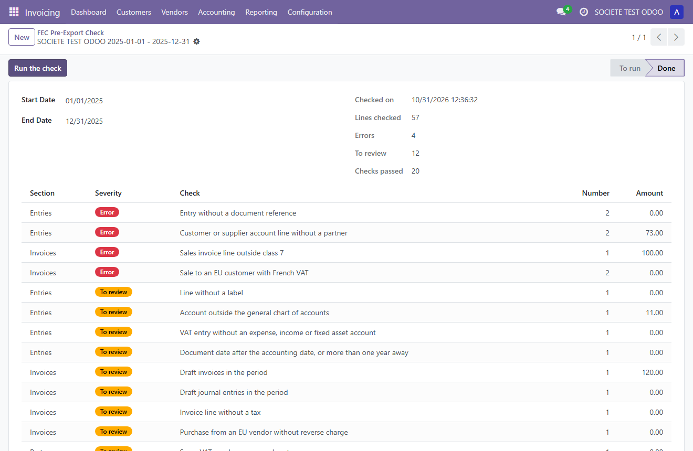

The FEC (Fichier des Écritures Comptables) is the accounting file French companies must hand over during a tax audit. This module looks at your accounting data before you export it, and lists what would be missing or inconsistent in the file. The rules follow what the FEC export of Odoo really writes.

The official chart of accounts used is the French general chart of accounts, ANC regulation 2014-03, version of 1 January 2026. Associations, works councils and co-ownerships follow other official charts: some of their accounts may be reported.
The check helps you prepare the file. It does not replace the review of your accountant, and it does not validate the format of the file itself.
Works with Odoo Community and Enterprise, on Odoo.sh and on your own servers. Not available on Odoo Online.